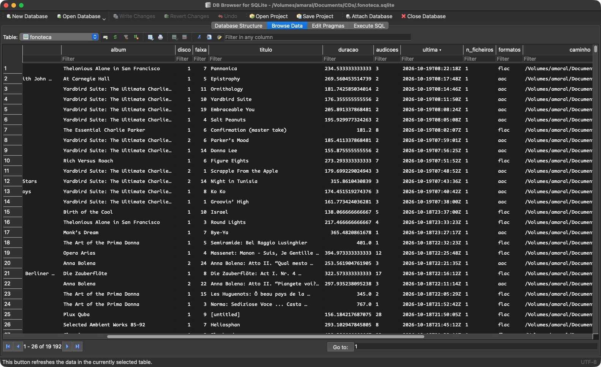

A base de dados da fonoteca

fonoteca no DB Browser for SQLite, ordenada pela última audição, antes de lá estarem as músicas que só existem na aplicação Música.A base separa três coisas que um leitor de música costuma confundir: a música (uma gravação), o ficheiro (onde ela está agora, num dado formato) e o disco (o CD de onde veio). Uma música pode ter vários ficheiros, por exemplo um FLAC e um AAC da mesma gravação, e pode estar em vários discos, como uma compilação e o álbum original. As audições contam-se na música, e por isso não se perdem quando um ficheiro muda de nome, de pasta ou de formato. A aplicação Música entra como uma quarta fonte, com as suas próprias faixas.
Os números entre parênteses são os de 29 de Outubro de 2026.
Tabelas
musicas (37 675)
Uma linha por gravação. A chave é um UUID v4, o mesmo que está na etiqueta FONOTECA_ID dos ficheiros. Guarda o título, o artista, o álbum, o disco, a faixa e a duração, e, como referência, os identificadores do MusicBrainz da gravação e do lançamento. Cerca de metade são músicas que só existem na aplicação Música.
ficheiros (19 471)
Uma linha por ficheiro de áudio, com a música a que pertence, o MD5 do áudio, o formato, o caminho e a última vez que o caminho foi confirmado. O MD5 é o das tramas ou dos pacotes de áudio tal como estão, sem etiquetas nem capa, para que mudá-las não o altere. Só o Monkey’s Audio é descodificado para PCM. Um ficheiro que desapareça fica com o caminho a NULL em vez de ser apagado. Assim, a sua história continua na base, e o MD5 permite reconhecê-lo se voltar a aparecer noutro sítio.
discos (1 237)
Os CDs, pelo identificador CDDB de oito dígitos e, quando se conhecem, pela TOC completa e pelo disc ID do MusicBrainz. O CDDB sozinho não basta, porque discos diferentes podem partilhá-lo. Por isso, o que é único é o par CDDB e TOC.
faixas_cd (15 991)
A ligação entre discos e músicas: a faixa n do disco d é a música m. É por aqui que um CD metido no leitor encontra os nomes, a capa e o ganho na fonoteca, e que uma audição do CD conta para a mesma música que o ficheiro riporinado.
faixas_musica (37 896)
As faixas da aplicação Música, pelo persistent ID que o Música lhes dá, cada uma ligada à sua música. O estado diz como foi ligada: automaticamente, por escolha, com uma música própria criada para ela, ou ainda pendente de escolha. Guarda também o que o Música mostra (artista, álbum, faixa, título e duração), a contagem que o Música tinha quando a faixa entrou na base e a última contagem já registada. As faixas do catálogo tocadas fora da biblioteca têm uma chave tirada da própria faixa, porque o persistent ID delas muda a cada reprodução. Ver AUDIÇÕES DO MÚSICA.
candidatas_musica (5 098)
Para cada faixa pendente, as músicas a que pode corresponder, pela ordem de preferência, com o critério que as encontrou e a diferença de duração.
audicoes (992)
Uma linha por audição, com a música, a data e hora (ISO 8601, em UTC), a origem (ficheiro, cd ou musica) e o ficheiro, o disco ou a faixa do Música que tocou. Uma faixa do tocaTintas conta ao fim de 5 segundos de audição efectiva. As pausas não contam, nem avançar antes disso, e cada reprodução conta uma vez. As regras da aplicação Música estão em AUDIÇÕES DO MÚSICA.
contagens_importadas (14 616)
As contagens que o tocaTintas guardava antes de haver base, em ~/Library/Application Support/tocaTintas/contagens.json. Foram trazidas uma única vez pelo fonoteca.py importar, que recusa repetir a importação. Somam-se às audições, mas não têm datas: só as audições novas as têm.
Vistas
contagens
Por música, o total de audições e a data da última. O total soma as contagens importadas, as que o Música tinha quando as suas faixas foram ligadas à música e as audições registadas.
ficheiros_contagens
Por ficheiro, quantas vezes a música tocou ao todo e quantas tocou este ficheiro. É o que permite comparar o FLAC com o AAC da mesma música.
fonoteca
A vista de leitura, a da Fig. 3. Tem uma linha por música, com as audições, a última, quantos ficheiros tem, os formatos (aac+flac), o caminho preferido (o do FLAC, se houver) e os CDs onde está, no formato cddb:faixa.
audicoes_locais
As audições à hora local, a mais recente primeiro. Mostra a hora (WET ou WEST, conforme a data), o artista, o álbum, o título, quantas vezes a música já tocou ao todo (a contagem que a janela mostra) e o que tocou: flac, aac, alac, mp3, cd ou música. A tabela guarda as horas em UTC, para que a ordem e as contas não se baralhem na mudança de hora. A conversão faz-se na leitura e acompanha a hora de Verão de cada audição.
Quem escreve o quê
O verificar_md5IV.sh e o fonoteca.py mantêm as músicas, os ficheiros, os discos e as faixas dos CDs. O fonoteca.py sincronizar-musica mantém as faixas do Música e regista as audições que o Música contou. O tocaTintas acrescenta:
- uma linha em audicoes por cada faixa ouvida;
- uma linha em musicas só com o UUID, quando toca um ficheiro com
FONOTECA_IDque o fonoteca.py ainda não viu, e que este completa da vez seguinte; - o disco e as suas faixas, quando toca um CD que a base ainda não conhece. Os nomes vêm do MusicBrainz ou do gnudb e ficam à espera do ficheiro que um dia for riporinado;
- a TOC e o disc ID de um disco conhecido só pelo CDDB, e o título, o artista e o álbum de uma faixa que não os tinha;
- as escolhas feitas na janela Ligar faixas do Música, e as audições das faixas do catálogo, pelo
fonoteca.py ouvir-musica.
Os campos da quarta alínea só se escrevem quando estão vazios. O que os scripts da fonoteca lá puseram nunca é substituído.
Exemplos
sqlite3 -readonly CDs/.fonoteca.sqlite \
"SELECT audicoes, artista, titulo FROM fonoteca
ORDER BY audicoes DESC LIMIT 10"As dez músicas mais ouvidas. Com -readonly, a consulta não interfere com o tocaTintas a correr.
sqlite3 -readonly -header -column CDs/.fonoteca.sqlite \
"SELECT * FROM audicoes_locais LIMIT 20"As últimas vinte audições, à hora local.